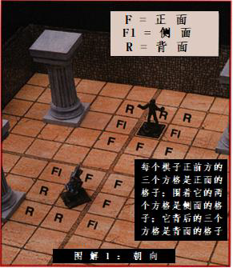
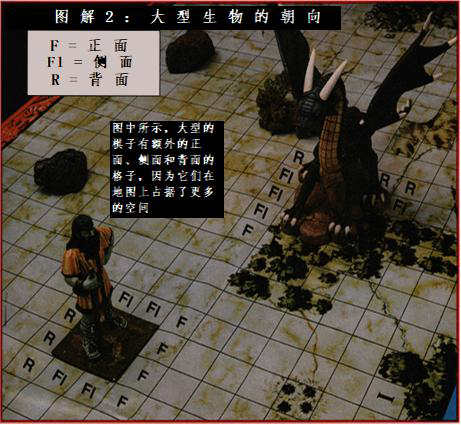

单位和朝向
单位和朝向
在战斗中所有角色都用模型或是立起来的指示物之类的东西来作为标记。棋子表示战斗中每个生物所处的位置并表示其朝向。在近战尺度中，一个人类体型的生物占据地图上的一个方格。
无论何种战斗，朝向都是重中之重。除非你主动转身，否则别人很难站到你的身后。战斗地图上的每个棋子或标志物应该有一个明显的正面朝向。对于奇形怪状的模型，所有人都应当事先对它的正面朝向达成共识。“这个棋子正面对着他用剑指着的那个方格”就可以了。
所有的棋子都有正面、侧面和背面。棋子朝向前的三个格子就是它的正面，而它旁边的两个格子是侧面，后面的三个格子就是背面。朝向可以对着方格的边或者是方格的角（见图示）。

通常情况下，角色只能攻击位于正面的的敌人，并且在攻击敌人的背面和侧面时获得攻击奖励。
在这两种情况下，一个以上的棋子可以挤在一个方格里：擒抱在一起的棋子都在防守方的方格里，而按照紧密的阵形排列的角色（详见于第二章）可以将两个棋子都放在一个方格里。如果一个方格里有多于一个棋子，那么每个棋子都有相同的前面、侧面和背面。没有谁会被认为位于格子的左边，或是格子背面，或是在其他的什么地方。
微型（T）的生物可以在方格中拥有无限数量的棋子，但超过10 个的棋子都处于同一个方格里是不常见的，除非它们是昆虫大小。
小于人类体型（S）的棋子通常占据一个方格，但是如果空间狭窄的话，它们可以两个人在一个方格里战斗而不会受到惩罚。一个方格能够容纳三个紧密排列的小型生物。
大型（L）生物通常占据地图上的一个格子。它们可以简单地通过占用相邻的格子而紧密地战斗。
巨型（H）生物通常在地图上占据两到四个格子，这取决于它们的大小和形状。像巨人和双头巨人这样的类人生物是两个方格的宽度，且前面和背面各有一个额外的格子。像马或蛇形的生物有狭窄的正面和长形的身体，所以多出两个侧面。块状或魁梧的生物占据四个方格。
超巨型（G）生物至少占据六个格子。如果DM 决定该生物的体型确实是庞大的，它们还可以更大。一条40
英尺长的龙可以占据两格宽、八格长的一大片格子！巨型的生物如同上述一样规定前面、侧面和背面，因此上述的每种类型都分别有三分之一的相邻方格能被归入其中。
